Bibliotek
Blockbiblioteket
De 30 källorna som designsystemet är mätt ur, plus brandboken och den tidigare dokumentationen. Ett kort per källa: vad det är, status och auktoritet, live-adress, vilka komponenter som bor där och länken till inventeringen.
INVENTERINGSBRIEF.md (källtabellen, auktoritet 1 till 3), inventering/<slug>.md + .json (mätningarna), konsolidering/komponenter-karta.md (komponenter per källa), ~/Desktop/Personal-OS/80-Repon/_blockbiblioteket.md (live-URL:er, verifierade 2026-09-08, läst men aldrig skrivet). Bilderna är inventeringens skärmdumpar nedskalade.
Auktoritet 1 ägargodkänd, live eller låst: kanon Auktoritet 2 levererad eller produktionsklar: stark Auktoritet 3 riktningar och prototyp: bara belägg
Skelett
Sajtens ram: tokens, header, hero, footer och knappbiblioteket. Auktoritet 1 rakt igenom.
Auktoritet 1
Live ampy.se (CSS + två block)
Sajtens riktiga stylesheets: de 101 ap-tokens, theme-style, frontend, site-css, och ROT/GT-blocken som markup. Token-sanningen.
Status: live
Komponenter: ap*-tokens, processblock tre steg, pastellknapp, gradient-rubrik, hero .home-hero, produktväljare .ampy-elfirma
Live Inventering JSON
Auktoritet 1
Header v5 (Website-blocks)
Sky-mist-bar 76 px, tre mega-menyer, solid teal-CTA med pulsprick, Evify-drawer. Header godkänd.
Status: header godkänd, 3 ägarbeslut
Komponenter: header + mega-meny, header-CTA (solid, B5), drawer, burger
Live Inventering JSON
Auktoritet 1
Hero-1 (startsidan, riktning B)
Inramad foto-hero med veil, H1 60/700, gradient-CTA, proof-rad. Ägargodkänd och installerad live.
Status: ägargodkänd, färdig
Komponenter: navy-ram (.ampy-frame), display, lead, gradient-CTA, proof-rad, header v5
Live Inventering JSON

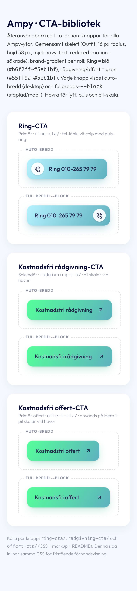
Auktoritet 1
Knappbiblioteket (CTA-website)
Tre kanoniska CTA:er: rådgivning och offert (gradient) och ring (blå gradient med chip). Katalog-JSON.
Status: levererat som bibliotek
Komponenter: knapp primär gradient, tel-ring, --block, focus 3 px navy, reduced-motion
Live Inventering JSON
Block
Innehållsblocken på tjänste-, orts- och startsidor.
Auktoritet 2
CTA-bandet (Main CTA, version B)
Vitt kort på sky-mist: rubrik, brödtext, EN ring-CTA, Edvins porträtt med våg.
Status: produktionsklar, experiment stängt
Komponenter: CTA-band, ring-CTA, porträtt-figur, (gradient-span = drift)
Live Inventering JSON
Auktoritet 2
Avdragsblocken (ROT / GT / hemförsäkring)
Familjen D2 'Kvittot först': H2-mall, processteg med ringar, kvittopanel, CTA. 278 sidor mappade. Klonen av live är auktoritet 1.
Status: levererat till Chris, 7 ägargrindar
Komponenter: processteg med ringar, kvittopanel (ljus/mörk), avdragsblock, offert-pill, avdragschip, prisrad
Live Inventering JSON
Auktoritet 1
Omdömesslidern (Testimonials V1)
Mörka omdömeskort i Splide, fyra prickar som fylls i takt med autoplayen, Google-badge som enda CTA.
Status: V1 låst, 3 candour-grindar
Komponenter: testimonial-kort, slider-skal, prick-navigering, Google-badge, citat
Live Inventering JSON

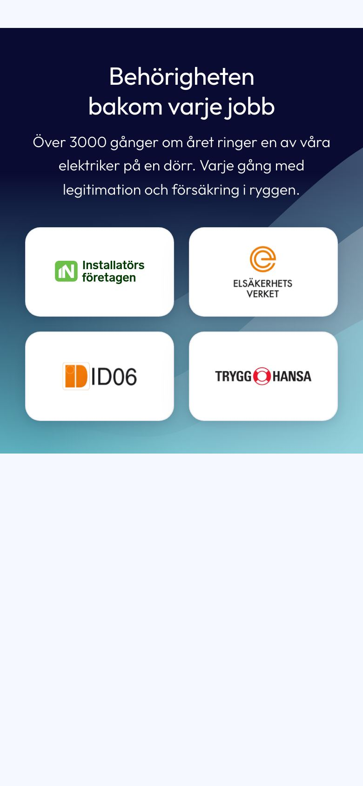
Auktoritet 2
Certifikat-bandet (v2)
Gradientband med tre vågor och fyra märkeskort normaliserade på bläckmassa. Paritet 24 av 24 bredder.
Status: levererat, paritet
Komponenter: certifikat-band, märkeskort, tvåtonsring, (gradient navy till #5eb1bf = B16)
Live Inventering JSON
Auktoritet 1
Eljour-blocket (symptom + samtal)
13 symptom i två nivåer, samtalskort med status, trust-lista och nödknapp. 'Sajtens bästa block 23/25'.
Status: v3 produktionsblock, ägargrindad
Komponenter: delad rubrik, samtalskort, statuspill, symptomlista (ackordeon), nivåtagg, nödknapp (B6), källrad
Live Inventering JSON
Auktoritet 2
Sticky call-bar + hörnkort
Fixed ring-bar 83 px på mobil, 216 x 128-hörnkort på desktop. Pillen samplad ur ring-knappen.
Status: väntar ägargrind (hörnval)
Komponenter: sticky call-bar, hörnkort, ring-knapp --block, sticky samtalskort
Live Inventering JSON

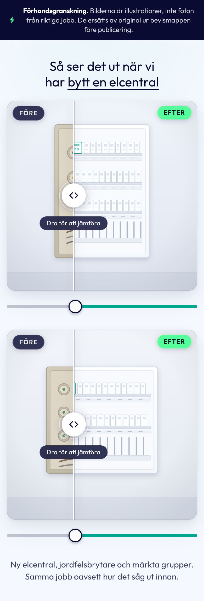
Auktoritet 2
Före/efter (riktning A 'Reglaget')
Två kvadratiska ramar med söm, chip, handtag och range 44. 0 asks, en H2, en tagline.
Status: klart, väntar fotobibliotek
Komponenter: före/efter-ram, chip FÖRE/EFTER, söm + handtag, ledtråd, reglage, H2 med understruken accent
Live Inventering JSON

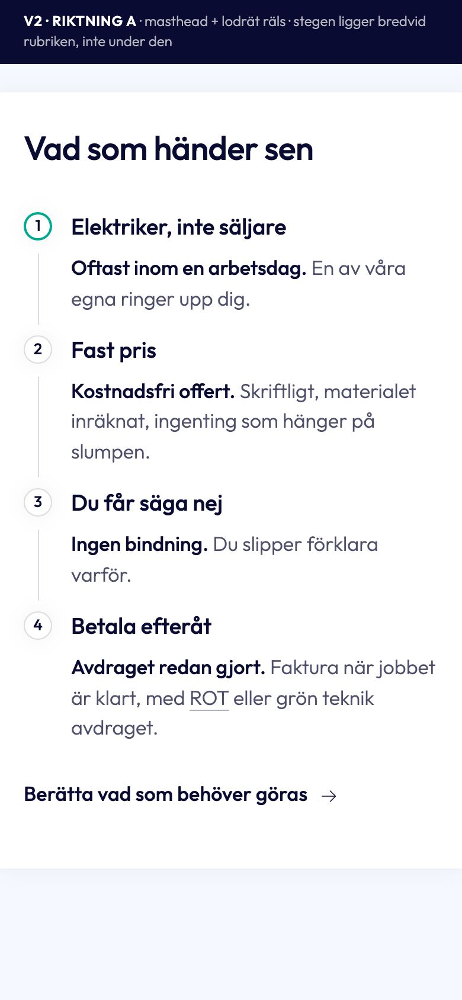
Auktoritet 3
Vår process (3 riktningar + v2)
'Vad som händer sen': räls-steg med medaljonger, bevisrad, överlämning som länk. v2 A rekommenderad.
Status: väntar riktningsval + 5 GAP
Komponenter: processkort, räls-steg, löfteschip, bevisrad, överlämningslänk
Live Inventering JSON

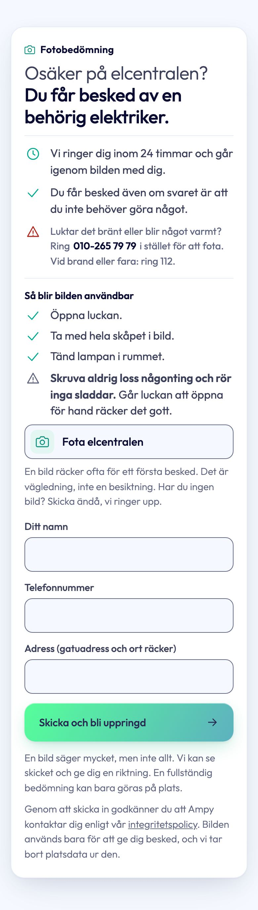
Auktoritet 2
Fotobedömningen v2 'Avslutskortet'
Bild + namn + telefon + adress + submit + kvitto i samma kort. 'Fem staplar, en tänd.'
Status: v2 byggd, go/no-go = dubbel uppladdning
Komponenter: band + kort, eyebrow, tvåfärgad H2, info-rader, fem staplar, kvitto, candour + GDPR
Live Inventering JSON
Auktoritet 2
Visste du att
Midnight-kort med teal-kicker och blixt, H2, kort text och glödlampa. Lätt register. Binder direkt till ap-tokens.
Status: slutaudit GO, ägar-items kvar
Komponenter: mörkt kort, kicker med blixt, H2 + text, lampa
Ingen Pages Inventering JSON
Auktoritet 2
Hero-2 S/G/Z/E (v18)
En hjälte per intent för 260 sidor: navy ram 22, H1 48/700, scrim-primitiver, CTA-kloner, proof.
Status: slutversion, lanseringsgrindar kvar
Komponenter: hero-2-skal, primitiver (h1, lead, btn, field, chip, trustrow, grow, crumbs, scrim), formkort (Z)
Live Inventering JSON
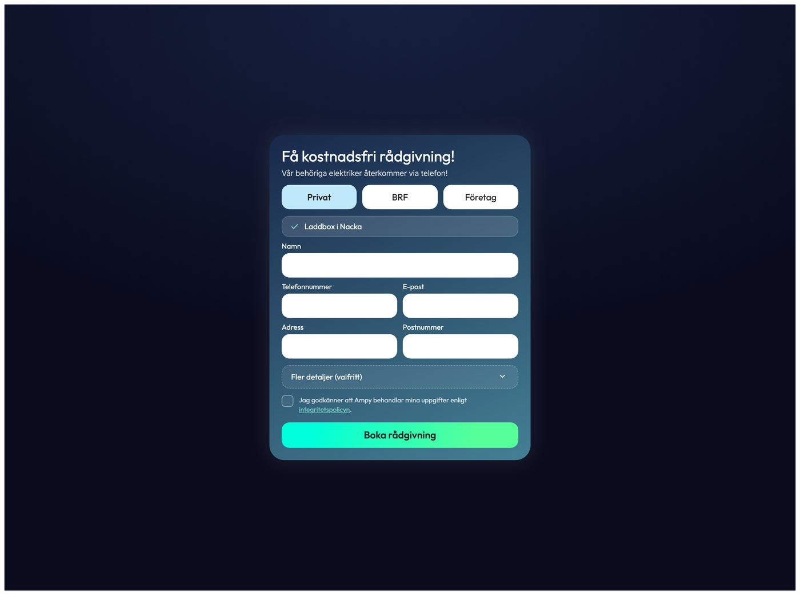
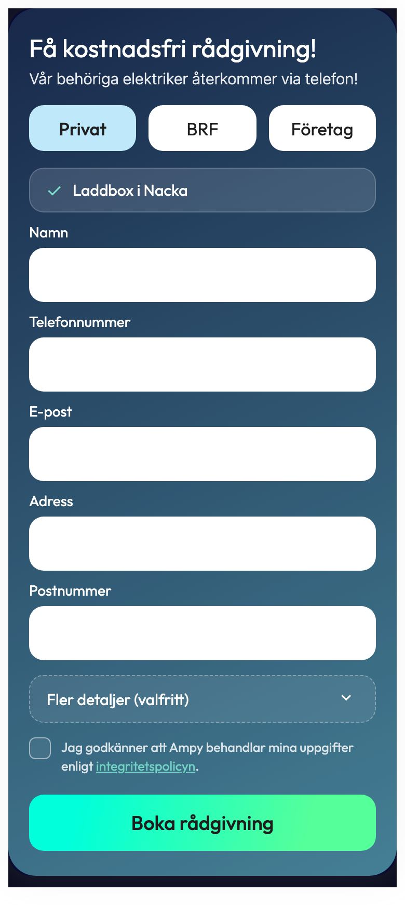
Auktoritet 2
Hero-2:s offertformulär (V1/V2)
Formkortets föregångare: glas .76 + blur 30 (underkänt), fem fält, gradient-submit 282deg.
Status: BLOCKER: ingen lead-endpoint
Komponenter: formkort (glas, drift), fält radie 14, submit (drift), segment i glas
Live Inventering JSON
Verktyg
Kalkylatorerna (tvåpanel) och diagnostikerna (rail och scen).
Auktoritet 1
LED-kalkylatorn
Tvåpanel: vitt inputkort, mörkt resultatkort med hero-siffra, stat-trio, staplar, 'Så har vi räknat'. Kanon för verktygskitet.
Status: live, en signering kvar
Komponenter: tvåpanel-skal, hero-readout, stat-trio, staplar amber/teal, methodology, inline lead-form, tips-chip, selector, segment, slider
Live Inventering JSON
Auktoritet 1
Laddboxkalkylatorn (EV)
Samma kit med @container, 16 laddboxar i selector, popover i stället för tooltip, månadsstaplar med delta.
Status: live, datasignering
Komponenter: tvåpanel (cqi), selector med foto, popover, toggle AC/DC, monthly compare, badge
Live Inventering JSON
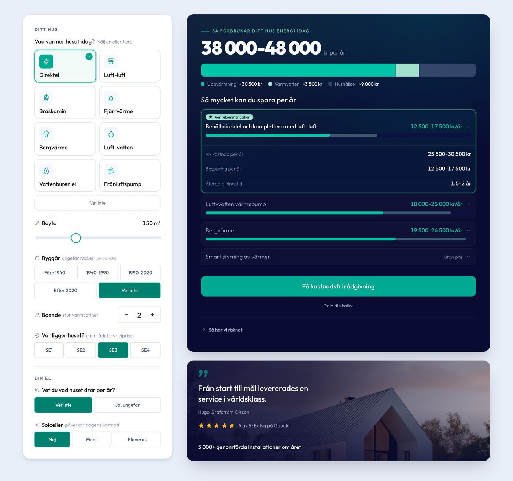
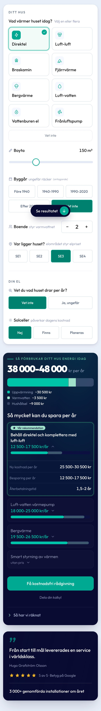
Auktoritet 1
Energikalkylatorn vB v36
Egen familj: sticky inputkort 420, resultat med tre radialer, anchor-siffra 52/900, stepper, byggårssegment, share-popover.
Status: live, webhook = stub
Komponenter: eyebrow med streck (kanon), stepper (kanon), seg-wrap, share-popover, anchor-num (drift), storybar
Live Inventering JSON
Auktoritet 1
Elcentral-kollen
Rail + scen: sju frågor, dualstatus 2x2, fem-nivå-pill, lead som steg i kortet, sticky-CTA på mobil. Kanon för diagnostiken.
Status: v2.26, webhook-fällan öppen
Komponenter: rail, frågekort, radio-chips, dualstatus, tag/pill (kanon), input (kanon), solid knapp (kanon), dela, sticky-CTA
Live Inventering JSON
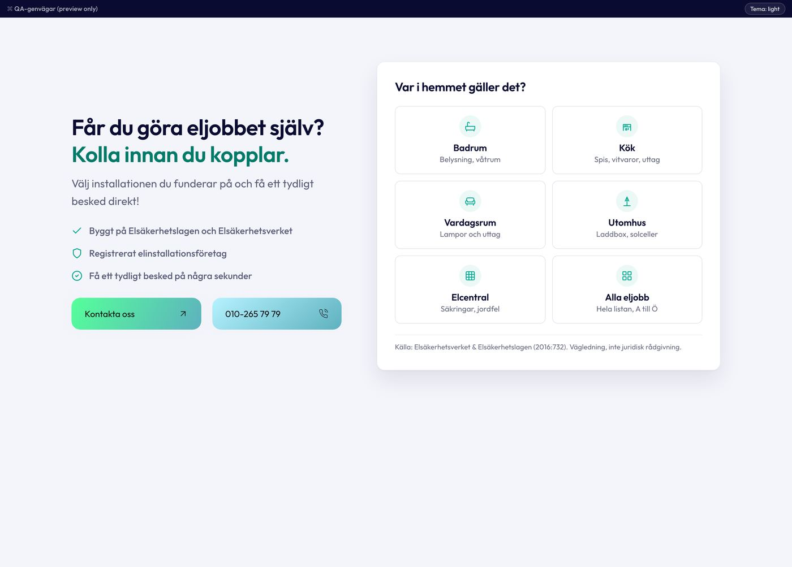
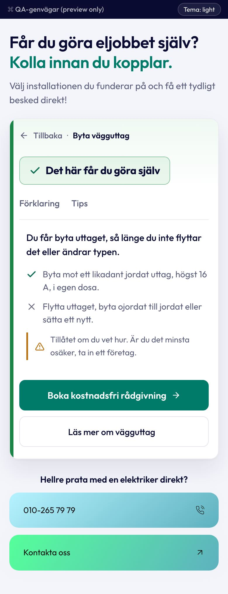
Auktoritet 1
Behörighetskollen (Elkollen)
26 eljobb, trafikljus-board med tabbar, källrad, roomtiles. Kanon för besked som board och källrad.
Status: v7.3.8, elektrikersignering kvar
Komponenter: trafikljus-board, källrad (kanon), sekundärknapp (kanon), options 72 h, roomtile, textlänk
Live Inventering JSON
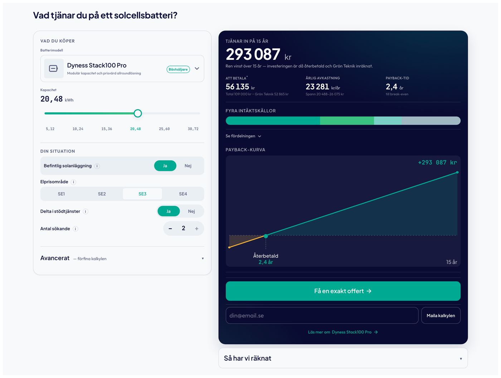
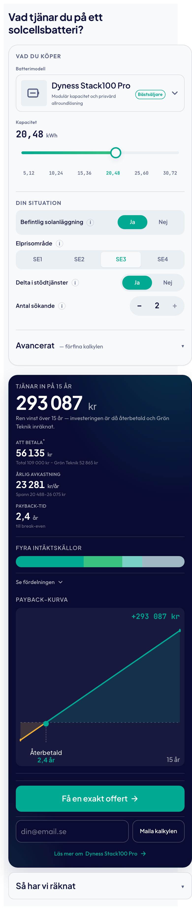
Auktoritet 3
Batterikalkylatorn
Prototyp med streams-bar och break-even-kurva: enda belägget för de två enheterna.
Status: prototyp, koefficienter osignerade
Komponenter: streams-bar, break-even-kurva, stat-trio (3 tiles), stepper pill
Ingen Pages Inventering JSON
Sidor
Formulär- och CRM-sidor: offert, tack, accepterad, bokning, artikelmall.
Auktoritet 2
/offert-formuläret (redesign)
Trust vänster, formulär höger i glaskort, chips i stället för fritext, adress-combobox. Design GO, produktion inte än.
Status: design GO, produktion NOT YET (7 GAP)
Komponenter: sökfält/combobox (enda belägget), textarea (kanon), input 55 h (drift), pill-knapp (drift), success-ikon
Live Inventering JSON
Auktoritet 2
Tack-sidan v1 FINAL
Glaskort på aurora: animerad bock, H1, ingress, betygsrad, pill-knapp, ghost-länk. Saknar stegen briefen kräver.
Status: v1 FINAL, överlämnad
Komponenter: glaskort (kanon B15), bekräftelse-bock (kanon), ghost-länk (kanon), aurora (kanon B11), eyebrow --action
Live Inventering JSON
Auktoritet 2
Tack-sidans implementationspaket
Samma design i px scopad under .ampy-tack; byte-identisk med v1:s deliver-mapp utom två punkter.
Status: levererat, ingen analytics
Komponenter: = tack-sidan, px-konverterad
Live Inventering JSON
Auktoritet 3
Offert accepterad (spegel)
CRM-sidans publika spegel: bock 86, tidslinjen 'Så här går vi vidare' (enda belägget), trust-rad, kontakt.
Status: spegel, ligger före källrepot
Komponenter: tidslinje (3-stegsstege), bekräftelse-bock 86, ref-pill, glaskort .74
Live Inventering JSON

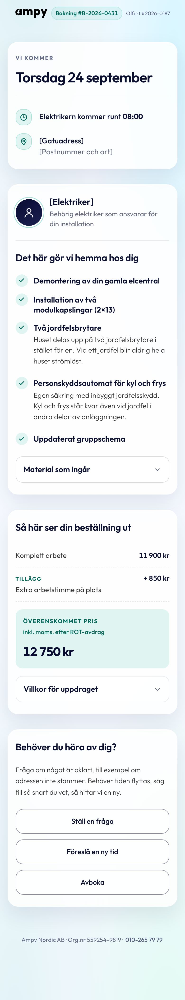
Auktoritet 2
Bokningsbekräftelsen (riktning B 'Dagen')
780-dokument på aurora: datumet som H1, faktabrickor, elektriker, arbetslista, kvitto med totalplatta, tre sekundärknappar med paneler.
Status: levererad till Yassine
Komponenter: sammanfattningskort, faktarad, arbetslista, kvittorader, totalplatta, sekundärknapp 52 h, expander (details), fokus navy
Live Inventering JSON
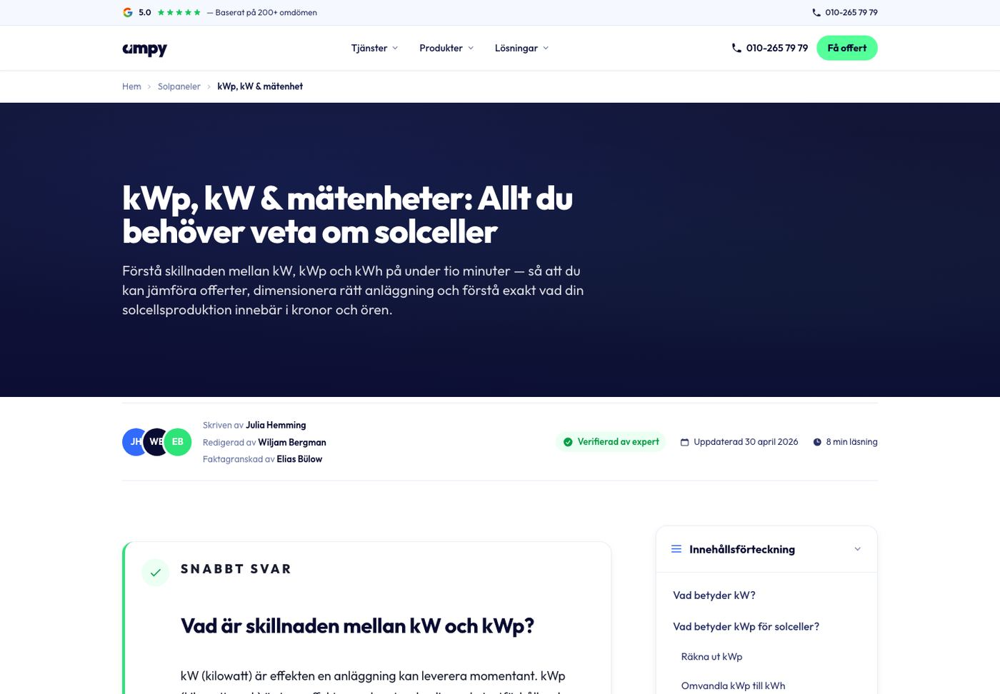
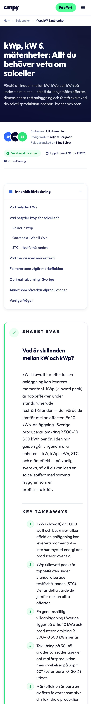
Auktoritet 2
Artikelmallen (21 komponenter)
React + Tailwind: hero, byline, sticky TOC, snabbt svar, sektioner, tabell, FAQ med JSON-LD, lead magnet, delning. Egen palett (#326afd = drift).
Status: 187 filer okommitterade lokalt
Komponenter: snabbfakta, FAQ, tabell (.ampy-table), byline, TOC, callout, (hero, lead magnet, share = ej klonade)
Ingen Pages Inventering JSON
Varumärke och referens
Grunden och jämförelseunderlaget: brandboken, Picasso och den tidigare dokumentationen.
Ingen skärmdump (PDF)
Auktoritet 1
Ampy Brandbook (PDF) + logotyper
Logotypsystem, palettnamn, Outfit som enda typsnitt, vikttabell. Kanon för logo och palettnamn; cobalt och lime finns inte i produktion (B1).
Status: varumärkets grund
Komponenter: logo (glyph, mark, wordmark), palettnamn, typsnittsregler, gradienter s.11 (drift)
Ingen Pages Inventering JSON
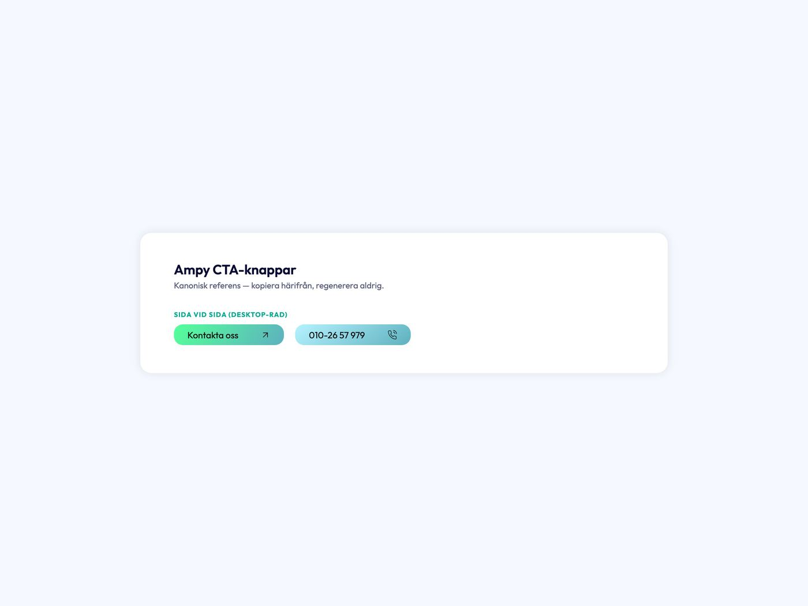
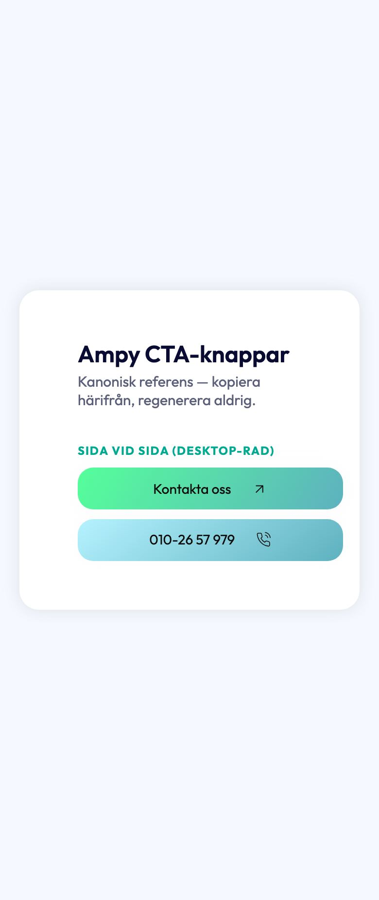
Auktoritet 3
Picasso (referensbiblioteket)
Verbatim referenskomponenter och fem byggen (bl.a. main-form-prototypen). Inspiration, aldrig kanon.
Status: inspiration, ej kanon
Komponenter: referens: hero/ampy, main-cta-klon, testimonials, main-form-prototyp, 38 px-knapp (utgår)
Ingen Pages Inventering JSON
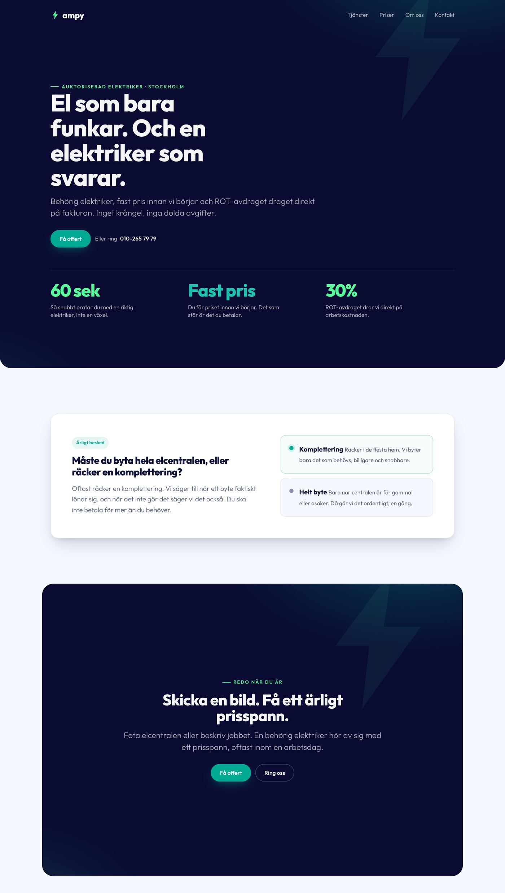
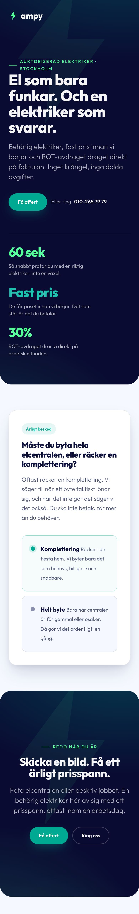
Jämförelseunderlag
Tidigare dokumentation (designsystem-skillen)
SKILL.md, tokens.md, components.md och ampy-foretagsdata §9 och §11: beskrivning, inte sanning. Jämförelseunderlag för konsolideringen.
Status: jämförelseunderlag
Komponenter: skillens referens (mörkt kort + glöd + centrerad rubrik = AI-slop-defaulten, B9)
Ingen Pages Inventering JSON
Motexempel
Uteslutet ur kanon: rot-gt-calculator/wireframes/, fem kalkylator-wireframes byggda på en dag och underkända av ägaren ("extremt svag design"). De renderas inte här med flit. Det de gjorde fel är det designsystemet är byggt för att aldrig göra igen.
| Vad de gjorde | Vad kanon gör |
|---|
| Fem alternativ utan en signaturenhet: villkorstavla, stegvis wizard, sliderpanel, jämförelsetabell och kort, alla lika lite motiverade. | EN signaturenhet per verktyg (kvittot, staplarna, dualstatusen), vald i marknadsanalysen före bygget. |
| Generiska ytor: mörka kort med glöd och centrerade vita rubriker, teal som text, gradientknappar av tre slag i samma vy. | Platt midnight, vänsterställd rubrik med kicker, teal-deep som text, en primär CTA per yta. |
| Wizard före värdet: frågor och fält innan ett enda resultat visades. | Värdet först, alltid gratis, lead-formen förtjänar sina fält i det heta ögonblicket. |
| Egna tokennamnrum och literaler, ingen koppling till sajtens ap-tokens. | Allt via --ampy-*; en avvikelse står i "Avvikelser" med skäl. |
| "Spara upp till 50 000 kr" som rubrik, "inom 60 sekunder" som löfte. | Candour-grinden: "avdrag", regeln och taket, ett räkneexempel som kan kontrolleras. |